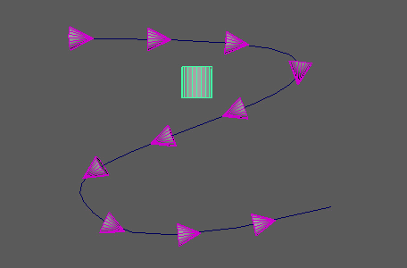
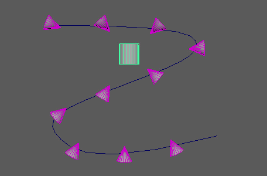

用于将点对准特定方向。
方向节点(Orient Node)
-
方向模式(Orient Mode)
- 确定定位方法。选项包括：
- 速度(Velocity)：沿移动方向定位对象。

- 对准目标(Aim at Target)：使对象指向场景中的指定对象。

- 定向到网格法线(Orient to Mesh Normal)：使用网格定位输入对象。
-
单放 X (Solo X)、单放 Y (Solo Y)、单放 Z (Solo Z)
- 使各自轴上的节点效果衰减。
-
上方向向量(Up Vector)
- 定义对象的上方向。为获得最佳结果，请将输入对象指向 X 轴下方。
-
平滑旋转(Smooth Rotations)
- 在 10 帧之上平滑旋转动画。当与“飞行”(Flight)节点一起使用时特别有用。
-
禁用传入(Mute incoming)
- 导致节点禁用任何传入旋转数组。
对准目标选项(Aim at Target Options)
-
目标(Target)
- 显示当“方向模式”(Orient Mode)设置为“对准目标”(Aim at Target)时这些对象将对准的对象。可以通过以下任一方式指定当前选定的对象：按住鼠标中键将其拖动到此字段；或者通过在该字段上单击鼠标右键并单击“连接”(Connect)。
定向到网格选项(Orient to Mesh Options)
-
输入网格(Input Mesh)
- 显示当“方向模式”(Orient Mode)设置为“定向到网格法线”(Orient to Mesh Normal)时这些对象定向自身将使用的网格。可以通过以下任一方式指定当前选定的对象：按住鼠标中键将其拖动到此字段；或者通过在该字段上单击鼠标右键并单击“连接”(Connect)。
注： 如果发现方向变化太突然，则可将“弹簧”(Spring)节点添加到旋转通道来减弱旋转。